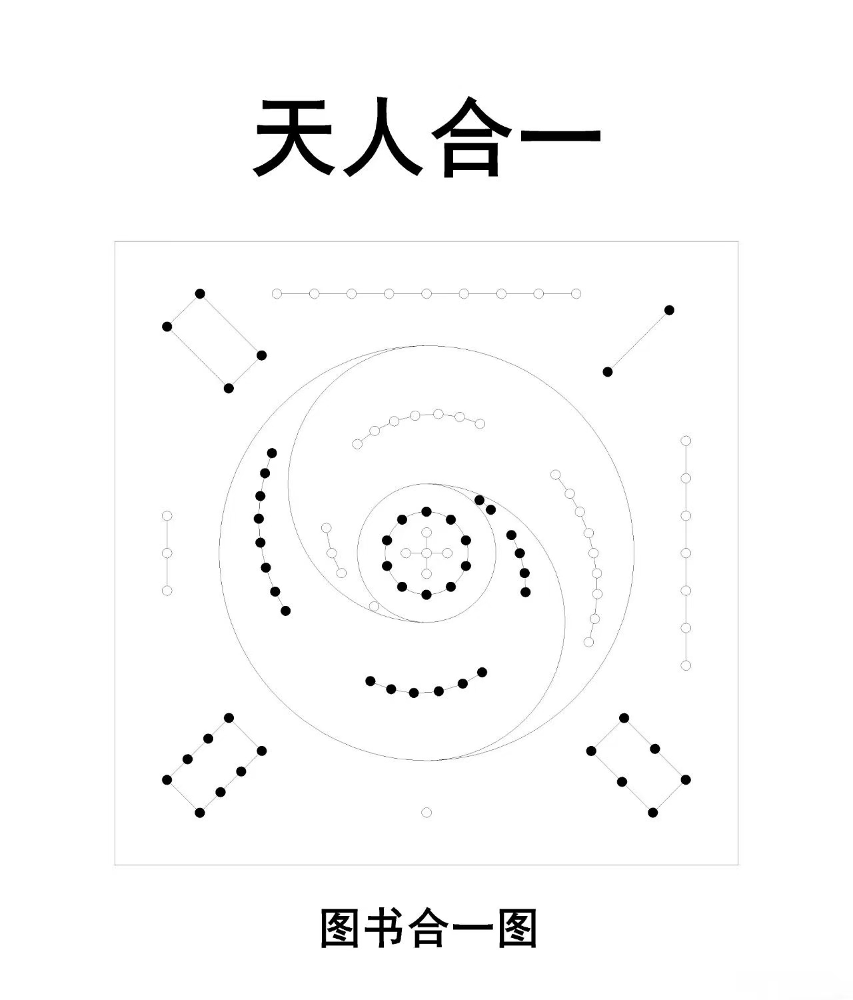

20250929河图：古代丹法秘传的宇宙图景与修炼心法
修炼修行符咒术法道家 原始对话记录
河图，这一源于中国上古传说的神秘图案，不仅是中华文明的滥觞，更在道家内丹学的修炼体系中扮演着至关重要的角色，被视为阐述宇宙生成、生命本源和“天人合一”的秘传蓝图。图像中所题的“天人合一”与“图书合一图”，揭示了其核心思想：人身即一小宇宙，通过特定的修炼方法，可以回归宇宙的本源状态。相关文献与丹经道籍揭示了河图在丹法修炼中的具体应用，其方法深植于河图的象、数、理之中。
河图的内涵与丹法理论基础
河图以黑白圆点的数量，揭示了“天地生成之数”的宇宙模型，这构成了丹法的理论核心。 其口诀“天一生水，地六成之；地二生火，天七成之；天三生木，地八成之；地四生金，天九成之；天五生土，地十成之”，阐明了五行的生成次序与方位。 在丹法中，这不仅仅是抽象的哲学概念，而是与人体脏腑、精气神相对应的修炼指南。
- 北方的一和六，代表肾水，为“元精”之所在。
- 南方的二和七，代表心火，为“元神”之所在。
- 东方的三和八，代表肝木。
- 西方的四和九，代表肺金。
- 中央的五和十，代表脾土，为“真意”之所在，负责调和四方。
丹道修炼的核心目标是“后天返先天”，即扭转生命由盛转衰的自然过程，回归到生命初始的纯净状态。 河图所展示的五行左旋相生之理，被视为顺应自然、化生万物的过程；而丹法修炼则强调“逆则成丹”，即通过特定的功法逆转此过程。 这一思想在五代道士陈抟老祖所传的《无极图》中得到了集中体现，其图式自下而上，阐明“逆则成丹之法”。
河图丹法的具体修炼法门
河图丹法的具体实践，虽然在各门派中有着“可以口诀，难以书传”的秘传性质，但其核心法门始终围绕着河图的数理模型展开，尤其体现在“三家相见”这一关键步骤上。
1. 筑基炼己：巩固修炼根基
丹法修炼的第一步是筑基，即培补人体的精、气、神。此阶段要求修炼者收视返听，清心寡欲，通过静坐、调息等方法，使身体达到精满、气足、神旺的状态。这一过程被称为“炼己”，即修炼心性，去除杂念，为后续的“炼精化气”打下坚实的物质和精神基础。
2. “三家相见”：元神、元精与真意的合一
“三家相见”是炼精化气的核心环节，指的是元神（心火）、元精（肾水）和真意（脾土）的交合。 宋代丹经《悟真篇》对此有云：“三五一都三个字，古今明者实然稀；东三南二同成五，北一西方四共之。戊己自归生数五，三家相见结婴儿。”
具体的修炼方法如下：
* 回光返照，神入气穴：修炼者通过凝神于下丹田（即“玄牝之门”），将心神（火）向下沉降，与肾精（水）相交。 此为“引火归元”，逆转了火性炎上的自然趋势。
* 水火既济，抽坎填离：当心火下降温暖肾水，肾水便不再寒冷而化为元气上升，以补益心神。这一过程称为“抽坎填离”，即抽取坎卦（代表肾水）中的真阳，去填补离卦（代表心火）中的真阴。 这是河图中“水生木、木生火”相生过程的逆向应用，实现了人体内部的水火相交，心肾合一。
* 真意调和：整个过程需要“真意”（中宫之土）的参与和调和。真意如同媒婆，将水与火撮合在一起，使其相融不悖，最终凝聚成“丹胎”，即“婴儿”。
3. 运行河车：贯通经脉，炼气化神
当精气凝炼后，修炼者会启动“河车”，即运用意念引导这股能量流沿任督二脉循环周流，称为“小周天”。 此过程会经过尾闾、夹脊、玉枕“三关”，最终上达头顶泥丸宫（上丹田），再返回下丹田。 这一步是炼气化神的过程，将后天的精气进一步提纯为更高级的生命能量。
4. 炼神还虚：回归虚无，与道合一
经过反复的周天运行，丹胎逐渐成熟，修炼者的精神也愈发纯净，最终进入“炼神还虚”的阶段。在此境界中，个体意识消融，回归到宇宙的虚无本源，真正达到“天人合一”的终极目标。
综上所述，河图作为古代丹法的秘传图谱，为修炼者提供了一套完整的宇宙观和身体观。其具体方法并非简单的吐纳导引，而是一套严谨的、以河图数理为基础的身心转化工程。通过“逆炼”五行、“三家相见”等核心步骤，将人体的精、气、神逐步提纯，最终实现从后天返回先天，与大道合为一体的超越性目标。然而，各派丹法均强调，具体的修炼细节和火候掌握，必须在有经验的“真师”口传心授下进行，方能确保修炼的安全与成功。
一张河图，和它背后的口诀
这页开头是一张图。图上有"天人合一"，有"图书合一图"。
河图是黑白两色的圆点，排在北、南、东、西、中五方。记录说，这是"天地生成之数"的模型。口诀是："天一生水，地六成之；地二生火，天七成之；天三生木，地八成之；地四生金，天九成之；天五生土，地十成之。"
它把这些点一一对到人身上。北方的一和六，是肾水，叫"元精"。南方的二和七，是心火，叫"元神"。东方三和八是肝木，西方四和九是肺金。中央五和十，是脾土，叫"真意"，调和四方。
关键是那个"逆"字。五行左旋相生，是顺，是化生万物。丹法偏偏"逆则成丹"，要把这条路倒着走回去，从后天返先天。
于是有"三家相见"。元神是心火，元精是肾水，真意是脾土，三家要凑到一处。记录写得很细：凝神下丹田，"回光返照，神入气穴"，让心神往下沉，跟肾精相交，这叫"引火归元"；水火既济了，就是"抽坎填离"；中间还得有人撮合，是"真意"，像媒婆，把水火凑成一对。凑成了，凝出一个"丹胎"，也叫"婴儿"。
《悟真篇》那两句被引在这里："三五一都三个字，古今明者实然稀……戊己自归生数五，三家相见结婴儿。"
再往后是"运行河车"，让能量沿任督循环，过尾闾、夹脊、玉枕三关，上泥丸宫，再返下丹田。最后"炼神还虚"，个体意识消融，回到本源里去。
本体系管这个"婴儿"叫元婴。《咱们的高级心法》那页写："咱们的高级心法，就是从三家相见，元婴呈现开始。"又说一句要细细参悟的："元婴才分身化身。"
记录最后留了半句：具体的火候和细节，须有经验的"真师"口传心授。